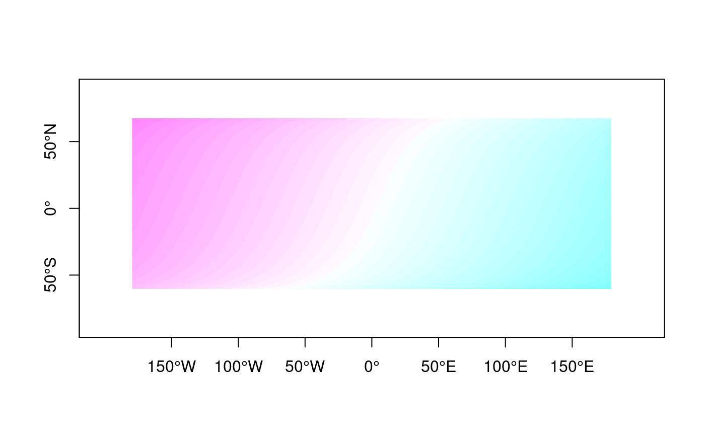

Methods for sun ephemerides calculations
sun-methods.RdFunctions for calculating sunrise, sunset, and times of dawn and dusk, with flexibility for the various formal definitions. They use algorithms provided by the National Oceanic & Atmospheric Administration (NOAA).
# S4 method for SpatialPoints,POSIXct crepuscule(crds, dateTime, solarDep, direction=c("dawn", "dusk"), POSIXct.out=FALSE) # S4 method for matrix,POSIXct crepuscule(crds, dateTime, proj4string=CRS("+proj=longlat +datum=WGS84"), solarDep, direction=c("dawn", "dusk"), POSIXct.out=FALSE) # S4 method for SpatialPoints,POSIXct sunriset(crds, dateTime, direction=c("sunrise", "sunset"), POSIXct.out=FALSE) # S4 method for matrix,POSIXct sunriset(crds, dateTime, proj4string=CRS("+proj=longlat +datum=WGS84"), direction=c("sunrise", "sunset"), POSIXct.out=FALSE) # S4 method for SpatialPoints,POSIXct solarnoon(crds, dateTime, POSIXct.out=FALSE) # S4 method for matrix,POSIXct solarnoon(crds, dateTime, proj4string=CRS("+proj=longlat +datum=WGS84"), POSIXct.out=FALSE) # S4 method for SpatialPoints,POSIXct solarpos(crds, dateTime, ...) # S4 method for matrix,POSIXct solarpos(crds, dateTime, proj4string=CRS("+proj=longlat +datum=WGS84"), ...)
Arguments
| crds | a |
|---|---|
| dateTime | a POSIXct object with the date and time associated to calculate ephemerides for points given in crds. |
| solarDep | numeric vector with the angle of the sun below the horizon in degrees. |
| direction | one of "dawn", "dusk", "sunrise", or "sunset", indicating which ephemerides should be calculated. |
| POSIXct.out | logical indicating whether POSIXct output should be included. |
| proj4string | string with valid projection string describing the
projection of data in |
| … | other arguments passed through. |
Details
NOAA used the reference below to develop their Sunrise/Sunset
http://www.srrb.noaa.gov/highlights/sunrise/sunrise.html and Solar Position
http://www.srrb.noaa.gov/highlights/sunrise/azel.html Calculators. The algorithms include corrections for atmospheric refraction effects.
Input can consist of one location and at least one POSIXct times, or one POSIXct time and at least one location. solarDep is recycled as needed.
Do not use the daylight savings time zone string for supplying dateTime, as many OS will not be able to properly set it to standard time when needed.
Warning
Compared to NOAA's original Javascript code, the sunrise and sunset estimates from this translation may differ by +/- 1 minute, based on tests using selected locations spanning the globe. This translation does not include calculation of prior or next sunrises/sunsets for locations above the Arctic Circle or below the Antarctic Circle.
Value
crepuscule, sunriset, and solarnoon return a
numeric vector with the time of day at which the event occurs,
expressed as a fraction, if POSIXct.out is FALSE; otherwise they
return a data frame with both the fraction and the corresponding
POSIXct date and time.
solarpos returns a matrix with the solar azimuth (in degrees
from North), and elevation.
Note
NOAA notes that “for latitudes greater than 72 degrees N and S, calculations are accurate to within 10 minutes. For latitudes less than +/- 72 degrees accuracy is approximately one minute.”
References
Meeus, J. (1991) Astronomical Algorithms. Willmann-Bell, Inc.
Examples
## Location of Helsinki, Finland, in decimal degrees, ## as listed in NOAA's website hels <- matrix(c(24.97, 60.17), nrow=1) Hels <- SpatialPoints(hels, proj4string=CRS("+proj=longlat +datum=WGS84")) d041224 <- as.POSIXct("2004-12-24", tz="EET") ## Astronomical dawn crepuscule(hels, d041224, solarDep=18, direction="dawn", POSIXct.out=TRUE)#> day_frac time #> newlon 0.2762 2004-12-24 06:37:43crepuscule(Hels, d041224, solarDep=18, direction="dawn", POSIXct.out=TRUE)#> day_frac time #> newlon 0.2762 2004-12-24 06:37:43## Nautical dawn crepuscule(hels, d041224, solarDep=12, direction="dawn", POSIXct.out=TRUE)#> day_frac time #> newlon 0.3121822 2004-12-24 07:29:32crepuscule(Hels, d041224, solarDep=12, direction="dawn", POSIXct.out=TRUE)#> day_frac time #> newlon 0.3121822 2004-12-24 07:29:32## Civil dawn crepuscule(hels, d041224, solarDep=6, direction="dawn", POSIXct.out=TRUE)#> day_frac time #> newlon 0.3519249 2004-12-24 08:26:46crepuscule(Hels, d041224, solarDep=6, direction="dawn", POSIXct.out=TRUE)#> day_frac time #> newlon 0.3519249 2004-12-24 08:26:46solarnoon(hels, d041224, POSIXct.out=TRUE)#> day_frac time #> newlon 0.5137966 2004-12-24 12:19:52solarnoon(Hels, d041224, POSIXct.out=TRUE)#> day_frac time #> newlon 0.5137966 2004-12-24 12:19:52#> [,1] [,2] #> [1,] 215.3381 10.85267#> [,1] [,2] #> [1,] 215.3381 10.85266sunriset(hels, d041224, direction="sunrise", POSIXct.out=TRUE)#> day_frac time #> newlon 0.3924249 2004-12-24 09:25:05sunriset(Hels, d041224, direction="sunrise", POSIXct.out=TRUE)#> day_frac time #> newlon 0.3924249 2004-12-24 09:25:05## Using a sequence of dates Hels_seq <- seq(from=d041224, length.out=365, by="days") up <- sunriset(Hels, Hels_seq, direction="sunrise", POSIXct.out=TRUE) down <- sunriset(Hels, Hels_seq, direction="sunset", POSIXct.out=TRUE) day_length <- down$time - up$time plot(Hels_seq, day_length, type="l")## Using a grid of spatial points for the same point in timegrd <- GridTopology(c(-179,-89), c(1,1), c(359,179)) SP <- SpatialPoints(coordinates(grd), proj4string=CRS("+proj=longlat +datum=WGS84")) wint <- as.POSIXct("2004-12-21", tz="GMT") win <- crepuscule(SP, wint, solarDep=6, direction="dawn") SPDF <- SpatialGridDataFrame(grd, proj4string=CRS("+proj=longlat +datum=WGS84"), data=data.frame(winter=win)) image(SPDF, axes=TRUE, col=cm.colors(40))